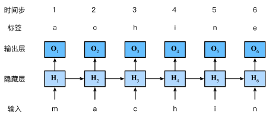
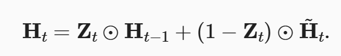

深度学习——循环神经网络（三）
循环神经网络
面对许多带有时序信息的数据时，往往需要对过去的数据进行预测，网络能够存储过去的信息以实现更好地输出。
1 序列模型
序列模型可以针对一些与时间相关的数据。可以分成两种，分别是自回归模型和马尔可夫模型。
1.1 自回归模型
自回归模型里面假设有隐状态（包含过去的所有信息），然后用隐藏状态去预估未来的概率。

1.2 马尔可夫模型
Markov 模型满足马尔可夫条件，当前状态只与前 τ 个时刻有关。
2 词源
面对文本数据需要对其进行编码，按照词、字母或者词组，并且根据频率进行标号。尽管面对词组时编码会变得很多，但根据词源频率统计，发现无论是哪种情况数量差不多。
3 语言模型
对文本信息进行处理时，要对其手动进行批量分割。分割方法分为两种随机采样和顺序采样。顺序采样相对随机采样保留子序列的顺序，可以保存更多的句与句间的信息。而每个数据的预测就应该是下一个词。为了增加随机性通常每次遍历数据会选择不同的起始偏移（该偏移保持在每个时间步内即每个序列的长度）

4 RNN
循环神经网络就是多了一个隐状态，隐状态  (激活函数用tanh)不仅与输入有关还与前一个状态的隐状态有关，该隐状态就存储了数据过去的信息。而输出为了简化，只与当前隐状态有关。
(激活函数用tanh)不仅与输入有关还与前一个状态的隐状态有关，该隐状态就存储了数据过去的信息。而输出为了简化，只与当前隐状态有关。

损失函数依然用的是交叉熵损失。同时由于历史原因，自然语言处理科学家喜欢用困惑度来衡量损失，就是在交叉熵损失后用一个对数，困惑度越大说明预测约不准，困惑度最低为1。
5 梯度剪裁
因为 RNN 在计算时每条数据都要进行多个时间步的计算，这容易产生梯度爆炸，所以常常使用梯度剪裁的方式限制。一种比较粗暴的方式是通过
当统计所有参数的梯度平凡共和大于 theta 将所有参数的梯度进行一个映射。
5 GRU
如果过去不同时间对结果的影响不同，普通的 RNN 无法解决这类问题。所以使用 GRU 门控循环单元，就是在普通的隐状态基础上增加了两个不同的门，分别叫 Reset Gate 和 Upgrad Gate。 。重置门 R 和 Z 计算方法与 H 相同。
。重置门 R 和 Z 计算方法与 H 相同。
还有一个隐藏候选状态 Ĥ跟重置门相关。最后隐藏状态 H 
当 Z 为 1 表明主要受过去状态影响，当 Z 为 0，R 为 0 表明主要受当前输入影响。